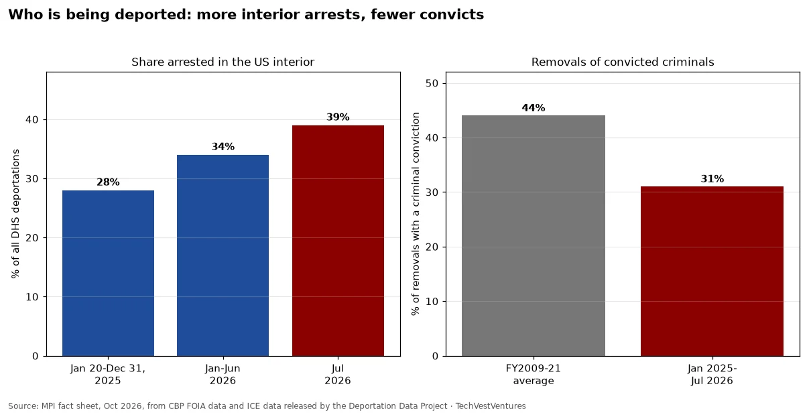

Q9. Interior Shift
Weekly Focus graphs: new charts are added each week from primary data. Each caption names its sources; numbers are not copied from third-party chart images.

The 'worst of the worst' promise vs the data. Even with border crossings at historic lows, 69% of the ~980,000 deportations were of people stopped at or near the border. But the interior share is rising: 28% in 2025, 34% in H1 2026 and 39% in July 2026, with interior deportations up from about 8,000 a month (first three months) to 19,000 a month (May-July 2026). Only 31% of removals were of people with a criminal conviction, against a 44% average in FY2009-21; overall 20% (190,000) of all deportations had a conviction.
Sources: MPI deportations fact sheet, Oct 2026 (PDF) Deportation Data Project (ICE FOIA data)